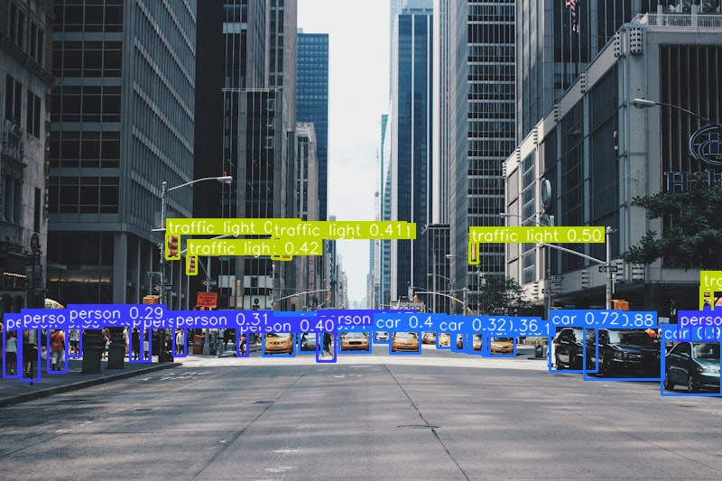
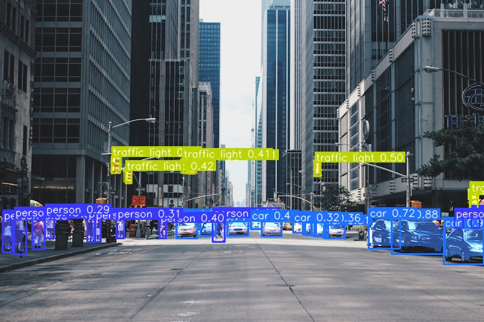
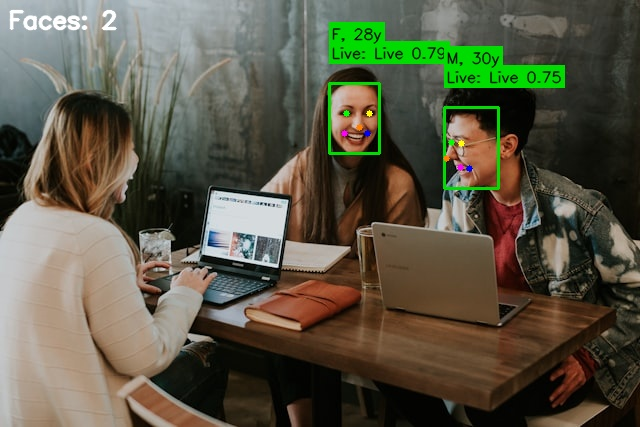
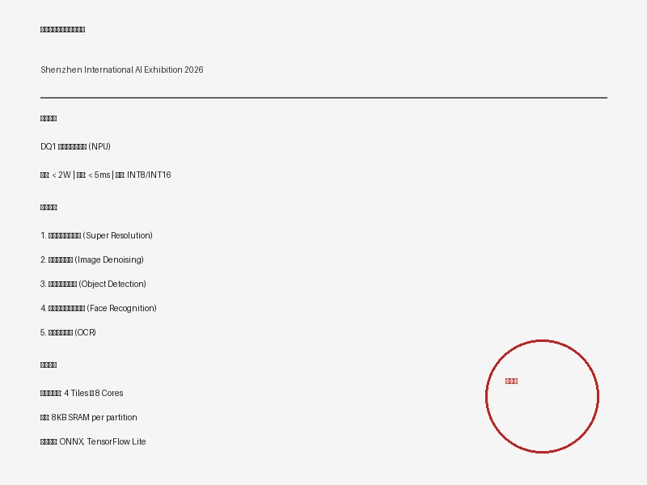
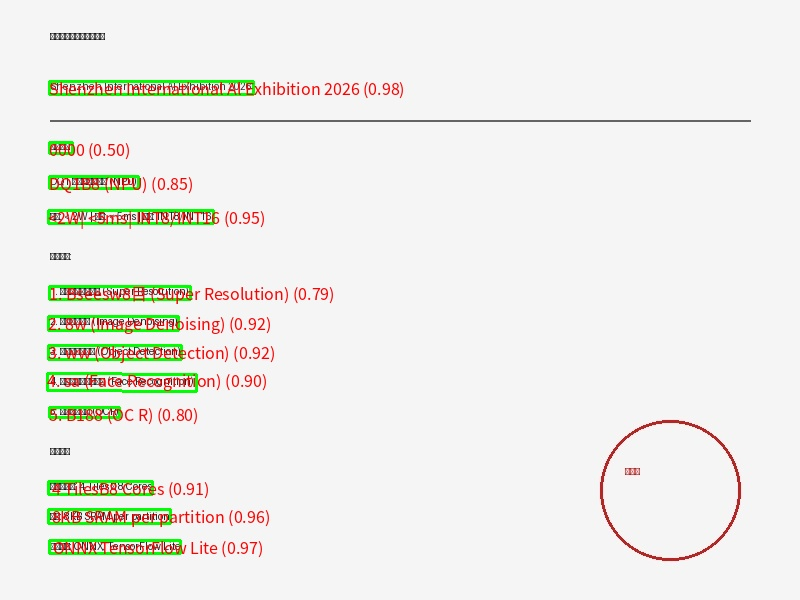

DQ1 AI Vision Engine
边缘智能 · 实时推理 · 极致性能
Edge Intelligence · Real-time Inference · Ultimate Performance
Before / After Comparison
低分辨率 → 超高清 (x4) | Low-res → Ultra HD (x4)
噪声图像 → 清晰图像 | Noisy → Clean
Intelligent Detection & Segmentation


Intelligent Face Recognition
输入图像 Input
检测结果 Detection Result

Multilingual OCR
输入文档 Input Document

识别结果 Recognition Result

Technical Specifications
Neural Processing Unit
| 模型 Model | 分辨率 Resolution | 帧率 FPS | 延迟 Latency |
|---|---|---|---|
| YOLOv8n | 640×640 | 0+ | 8.3ms |
| Real-ESRGAN | 480→1920 | 0+ | 33ms |
| SCRFD | 640×480 | 0+ | 5ms |
| PP-OCR | Variable | 0+ | 20ms |
| MobileFaceNet | 112×112 | 0+ | 2ms |
DQ1 功耗仅为 GPU 的 0.8%，实现同等推理性能